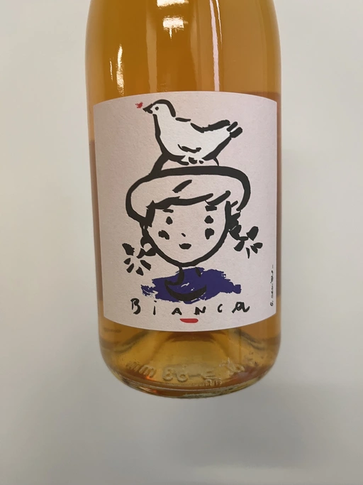
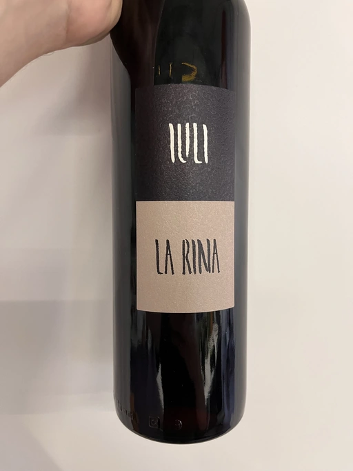
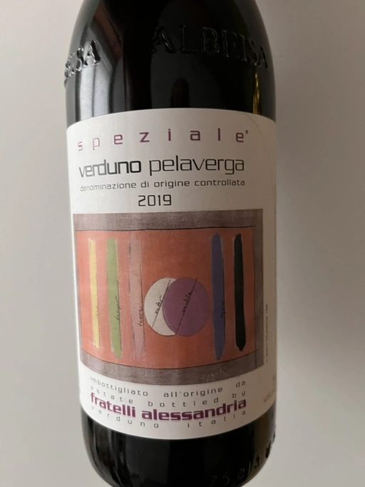
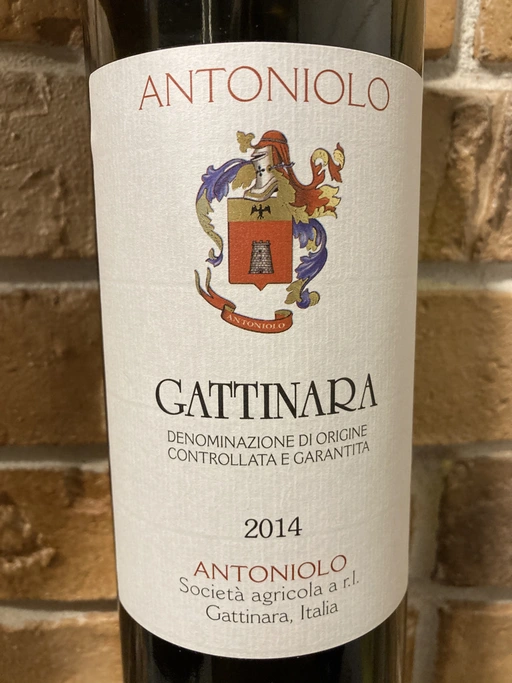
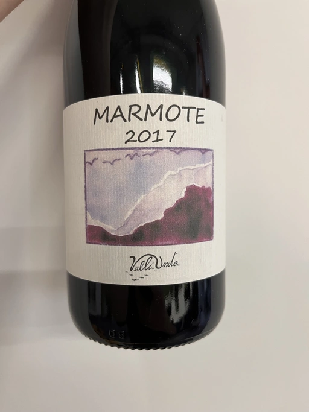
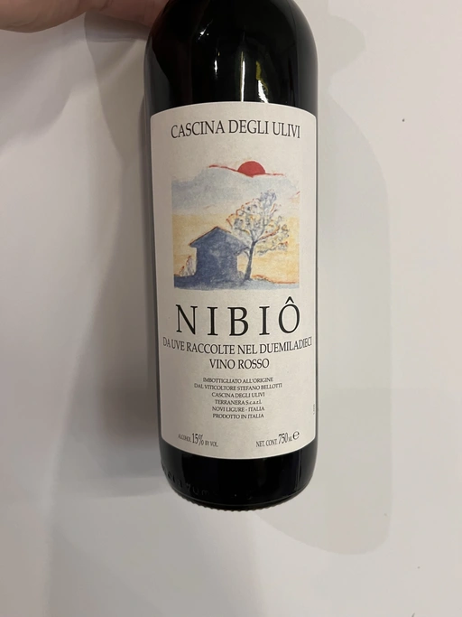
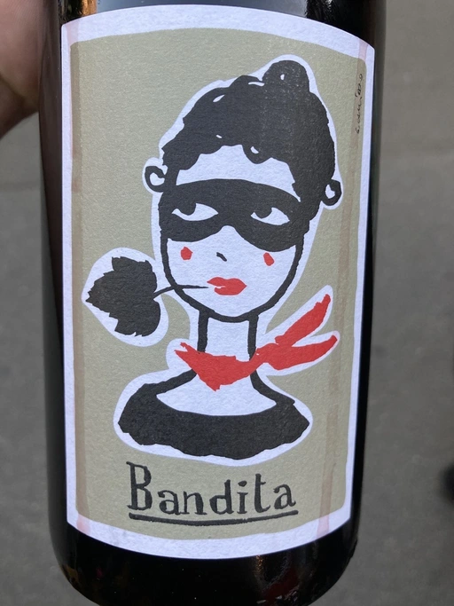

Grapes of Piedmont

A patchwork carpet spread over the hillsides of a beautiful country full of authentic character. Mostly known for Barolo, Barbaresco and Asti (yay, bubbles), now it is a home for wine world bandits that dig up old colours and senses. While I was preparing for Atypical ver.1.22474487139…, I realised how many little-known grapes Piedmont has to offer. Aside from famous Nebbiolo, Barbera, Dolcetto, Cortese and Moscato Bianco, there are less common grapes like Arneis, Grignolino, Freisa, Slarina, Brachetto, Uva Rara, Ruché, Pelaverga Piccolo. Of course, it’s impossible to fit everything into one event, so today, we have a small bite of all the Piemontese diversity.we have a small subset of all the Piemontese diversity to have a small taste of local grapes.
- Cascina Tavijn Vino Bianco L.B01/2021/22 NV
- Iuli La Rina 2018
- Fratelli Alessandria Speziale Verduno Pelaverga 2019
- Antoniolo Gattinara 2014
- Valli Unite Marmote 2017
- Cascina Degli Ulivi Nibiô 2010
- Cascina Tavijn Bandita 2016
Cascina Tavijn Vino Bianco L.B01/2021/22

- producer: Cascina Tavijn
- name: Vino Bianco L.B01/2021/22
- vintage: 2021
- grapes: Chardonnay, Cortese, Zibibbo
- appellation: Vino (IT)
- location: Italy
- alcohol: 12.5
- sugar: N/A
- price: 545 UAH
If I had to select a single producer for this evening, it would be Cascina Tavijn. Not only because they have a wide enough portfolio; but also because I am in love with their rustic character and peasant authenticity. Of course, we could have started with Asti or Gavi, but to hell with those wines. It’s time for some rebels with gorgeous labels made by Gianluca Cannizzo (the designer behind My Poster Sucks).
Cortese and Chardonnay from vines just beneath Nadia’s home blended with a little Moscato from her friend Ezio Cerruti. The grapes were destemmed and macerated for a few days (4-7 days), fermented in steel and then racked to fibreglass for nine months.
Iuli La Rina 2018

- producer: Iuli
- name: La Rina
- vintage: 2018
- grapes: Cellerina (Slarina)
- appellation: Vino (IT)
- location: Italy
- alcohol: 11.5
- sugar: 1
- price: 850 UAH
Try asking around about Slarina. There are a handful of farmers that grow this almost extinct grape. Among them are Cascina Tavijn and Fabrizio Iuli. And I must say that Fabrizio is a very interesting person, especially in the context of the modern world, where the boundaries are saturated as well as traditions and authenticity. He comes from Montaldo di Cerrina, a small town with a population that dropped from 450+ souls to just 92 over the last decades. Yet Fabrizio stays in his hometown and does his best to keep the place alive and flourishing. He even started a school for kids that follows a Steiner-inspired Italian-English curriculum that embeds traditional academics in an outdoor classroom set in the vines, fields and woodland of the farm.
As the only winemaker in the town, he tries to make traditional Piemontese wines that are easy and fun to drink. The grapes found in his vineyards are Baratuciat (a nearly-extinct white variety from the Val di Susa), Grignolino, Nebbiolo, Pinot Nero, Barbera, and, of course, Slarina. La Rina comes from very young vines planted in 2013. Owning nearly a hectare and a half of it, he jokes, “I am the most important producer of Slarina in the world”. It was macerated for ten days, fermented in cement vats and aged for 6-8 months (again, in cement vats). 5500 bottles produced. Quite a lot for a nearly-extinct grape.
Fratelli Alessandria Speziale Verduno Pelaverga 2019

- producer: Fratelli Alessandria
- name: Speziale Verduno Pelaverga
- vintage: 2019
- grapes: Pelaverga Piccolo
- appellation: Verduno Pelaverga DOC
- location: Piedmont, Italy
- alcohol: 13
- sugar: N/A
- price: 730 UAH
Fratelli Alessandria is a historic winery in the village of Verduno. Its story spans back to 1830 and is interleaved with the famous Barolo (e.g. when it transformed from semi-sweet wine to the “king of wines and wine for kings”). But I am a peasant from a small Moldovan village, so I had to pick something less prestigious. Meet Pelaverga Piccolo, a grape you can’t ignore when you mention Verduno, as Pelaverga Piccolo is exclusive to this village. Specifically, this wine comes from 2.6 ha vineyards located at 250-350m above sea level. Macerated for 6-8 days, aged between stainless and cement for six months.
Antoniolo Gattinara 2014

- producer: Antoniolo
- name: Gattinara
- vintage: 2014
- grapes: Nebbiolo
- appellation: Gattinara
- location: Piedmont, Italy
- alcohol: 13.5
- sugar: 1
- price: 1800 UAH
Unlike the famous Barolo and Barbaresco, the name of Gattinara is less-know to a wide audience. And no wonder. It’s located far to the North of the famous Monferrato hills and occupies drastically smaller land (93 ha vs almost 2000 ha in Barolo). Yet, located closer to the Alps and growing on different soils (granite and iron-rich vs calcareous marl soils), Gattinara produces more delicate and less brutal wines with elevated acidity and less astringency. Besides. Being less prestigious, they are more affordable - both in price and older vintage availability.
Antoniolo is one of the most prominent producers in the region. Mario Antoniolo established the winery in 1948. the 1970s, they had an enviable collection of Gattinara’s top crus, including a monopole on the Osso San Grato vineyard. At that time, Rosanna was running the winery, and upon request from famous wine journalist Luigi Veronelli, she bottled these crus as single vineyard wines. Today we have a bottle of their basic Gattinara that they age just like Reserve, and 2014 is the last vintage they didn’t label as such. Made of 50-60 years old vines growing on volcanic soils. Spontaneous fermentation in cement tank, aged in 25-35 hl Slavonian and French oak casks for 36 months. Around 9000 bottles are produced yearly.
Valli Unite Marmote 2017

- producer: Valli Unite
- name: Marmote
- vintage: 2017
- grapes: Croatina
- appellation: Vino (IT)
- location: Italy
- alcohol: 14
- sugar: 2
- price: 1200 UAH
Marmote is the black sheep of this event. Croatina is not the most Piemontese grape as it grows primarily in the Oltrepò Pavese region of Lombardy and the Province of Piacenza within Emilia Romagna. And while it has good representation in Piedmont, it’s an opportunity to continue unveiling the confusion around Bonarda. One of Croatina’s synonyms is Bonarda. At one of the previous events, we already tasted another grape that shares this synonym - Corbeau. But as it was already said, they have no relation. So we are one step closer to better understanding the situation.
Valli Unite is a natural wine cooperative. Being created in the 70s, it’s, in fact, one of the first in the country (accent on ‘natural’). Today they have 30 people on board. It’s quite an unorthodox community living and managing this multifunctioning farm of 100 ha, 20 of which are dedicated to vines.
Manually harvested, fruit destemmed, fermented with indigenous yeast in cement tanks. Short maceration for ten days. Matured in a combination of cement and stainless for one year. No Filtration, no fining, no use of sulphur in vinification.
Cascina Degli Ulivi Nibiô 2010

- producer: Cascina Degli Ulivi
- name: Nibiô
- vintage: 2010
- grapes: Dolcetto
- appellation: Vino (IT)
- location: Italy
- alcohol: 15
- sugar: 1
- price: 1490 UAH
Don’t be fooled by the name of Dolcetto. The name suggests that wines made of Dolcetto grape are light and probably sweet, but in reality, they are dark in colour with aromas of fruits, liquorice and tar and heavy tannin. The late Stefano Bellotti played a crucial role in the biodynamic movement in this region. It doesn’t feel morally correct to copy-paste the story of Stefano Bellotti, so if you are curious, just read it on Bowler or Louis/Dressner’s websites.
Nibiô is the local name of a unique strain of Dolcetto that used to be the primary grape of this area until phylloxera almost wiped it out. It is made of 60-year-old vines (on average). Macerated for four weeks with two remontages a day. After racking, it was aged on the lees in 25 and 40 hl botti for 24 months.
Cascina Tavijn Bandita 2016

- producer: Cascina Tavijn
- name: Bandita
- vintage: 2016
- grapes: Barbera
- appellation: Vino (IT)
- location: Italy
- alcohol: 15
- sugar: 3.2
- price: 1000 UAH
I love walking in circles. I love getting back to the starting point. That’s why we finish (no connection to the Fins) with Bandita - 100% Barbera from 40 years old vines scattered about the steep hills of the Monferrato. It spent two months on the skins, pressed to concrete vats for a year and then aged for one additional year in a big barrel.
The name of this wine comes from the fact that it was denominated from DOC and granted the most basic level - Vino Rosso, a table wine. And that’s how the modern history of Piemontese wine-making is made.
Scores
- Cascina Tavijn Vino Bianco L.B01/2021/22 NV
- Iuli La Rina 2018
- Fratelli Alessandria Speziale Verduno Pelaverga 2019
- Antoniolo Gattinara 2014
- Valli Unite Marmote 2017
- Cascina Degli Ulivi Nibiô 2010
- Cascina Tavijn Bandita 2016
| Wine #1 | Wine #2 | Wine #3 | Wine #4 | Wine #5 | Wine #6 | Wine #7 | |
|---|---|---|---|---|---|---|---|
| Oleksandr R | 4.10 | 4.00 | 3.70 | 3.50 | 3.70 | 2.50 | 4.30 |
| Andrii S | 3.90 | 3.30 | 4.00 | 3.70 | 3.90 | 3.90 | 4.30 |
| Viktoriya Zh | 4.10 | 4.20 | 4.00 | 4.30 | 3.90 | 3.80 | 4.40 |
| Dimitry G | 3.60 | 3.70 | 3.30 | 4.50 | 3.40 | 4.50 | 4.30 |
| Oleksandr Y | 4.00 | 3.70 | 4.00 | 3.80 | 3.70 | 3.90 | 4.00 |
| Elvira K | 4.00 | 3.60 | 3.70 | 4.00 | 3.80 | 4.10 | 4.20 |
| Mariia S | 3.90 | 3.40 | 3.70 | 3.60 | 3.90 | 4.00 | 4.20 |
| Andrey U | 3.80 | 2.00 | 3.70 | 4.10 | 4.50 | 4.60 | 4.40 |
| Ivietta K | 2.00 | 4.10 | 4.20 | 4.80 | 4.40 | 4.60 | 4.20 |
| Dmytro D | 3.60 | 3.20 | 3.50 | 4.20 | 4.10 | 4.00 | 4.20 |
| Tetiana S | 4.50 | 4.20 | 4.30 | 4.00 | 3.50 | 4.40 | 4.30 |
| Boris B | 4.00 | 3.80 | 3.80 | 4.20 | 4.00 | 4.20 | 4.00 |
| amean | sdev | favourite | outcast | price | QPR | |
|---|---|---|---|---|---|---|
| Wine #1 | 3.79 | 0.3441 | 1.00 | 2.00 | 545.00 | 3.2334 |
| Wine #2 | 3.60 | 0.3367 | 2.00 | 4.00 | 850.00 | 1.5743 |
| Wine #3 | 3.83 | 0.0752 | 1.00 | 1.00 | 730.00 | 2.5346 |
| Wine #4 | 4.06 | 0.1308 | 2.00 | 0.00 | 1800.00 | 1.4563 |
| Wine #5 | 3.90 | 0.0967 | 1.00 | 4.00 | 1200.00 | 1.7223 |
| Wine #6 | 4.04 | 0.2891 | 2.00 | 1.00 | 1490.00 | 1.7154 |
| Wine #7 | 4.23 | 0.0156 | 3.00 | 0.00 | 1000.00 | 3.4309 |
How to read this table:
ameanis arithmetic mean (and not ‘amen’), calculated as sum of all scores divided by count of scores for particular wine. It is more useful thantotal, because on some events some wines are not tasted by all participants.sdevis standard deviation. The bigger this value the more controversial the wine is, meaning that people have different opinions on this one.favouriteis amount of people who marked this wine as favourite of the event.outcastis amount of people who marked this wine as outcast of the event.priceis wine price in UAH.QPRis quality price ratio, calculated in as100 * factorial(rms)/price. The reason behind this totally unprofessional formula is simple. At some point you have to pay more and more to get a little fraction of satisfaction. Factorial used in this formula rewards scores close to the upper bound 120 times more than scores close to the lower bound.
Resources
- https://winefolly.com/deep-dive/piedmont-wine-map-of-italy/
- https://www.bowlerwine.com/producer/iuli
- https://www.iuli.it/
- https://www.bowlerwine.com/producer/fratelli-alessandria
- https://openingabottle.com/first-taste-guide-to-gattinara/
- https://www.skurnik.com/producer/antoniol/o
- https://italianwinecentral.com/denomination/gattinara-docg/
- https://www.valliunite.com
- https://sipwines.shop/products/marmote-rosso-valli-unite-2017